Video brief · How to get leads every day
Leads Every Day
Why most businesses have no leads, why the audience comes before the product, and the one lead source to start with today: short form content.
PromiseProblemValueApply todaySummaryCall to action
1 · Promise
Stick with this and you leave with
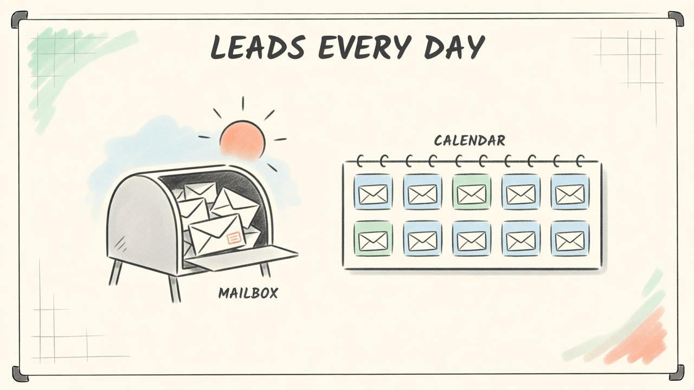
If you are not getting leads every day, this is for you.
- Why you have no leads, and the one thing most advice gets backwards.
- The audience-first shift and how to find the best kind of leads: a premium offer.
- A simple short form system that brings leads every day, from one platform.
- Two real results from this exact approach: 8k followers in 8 months, and a 300k sale.
?
What is the hidden cost of no leads?
2 · Problem
Most businesses lack leads, and the usual advice makes it worse
2.1
The number one problem is leads, not product
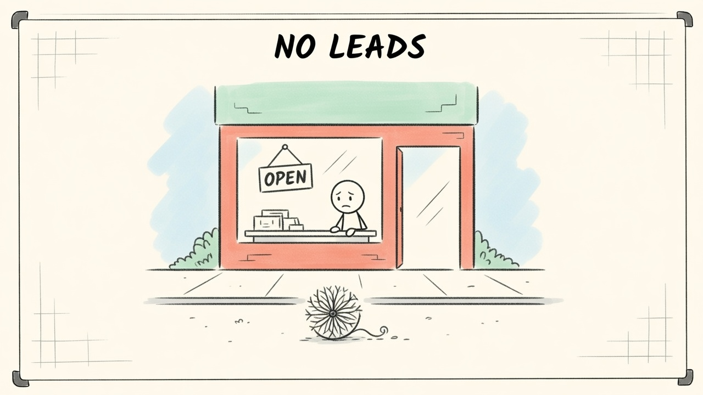
What the crowd says
- Start by designing the product or service.
- Get it polished, then they will come.
What I say
- Dead wrong. Build first is a trap.
- Most businesses' number one problem: no leads.
2.2
Build first is a trap
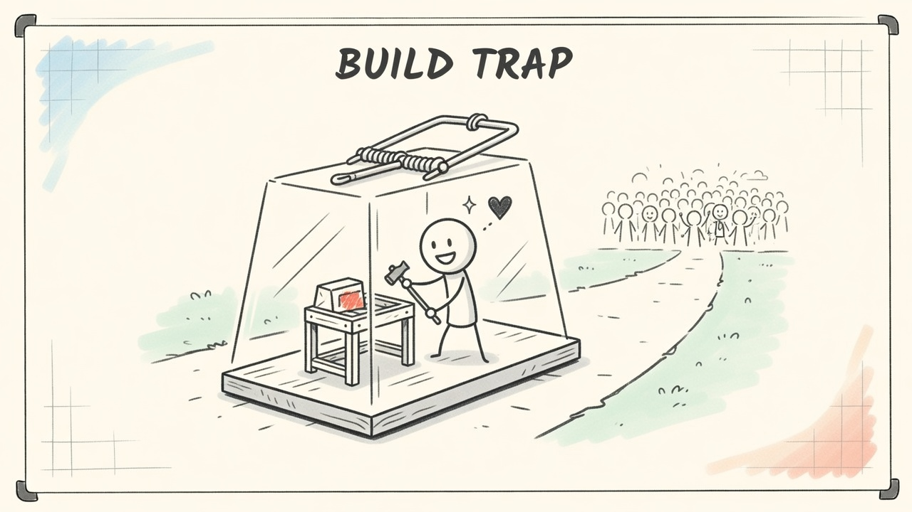
- Building feels good. Dopamine hits every time you ship a piece.
- That good feeling becomes procrastination. It keeps you from leads and sales.
Building is the most productive-looking way to avoid selling.
?
What did I do instead that sold for 300k?
2.3 · Story
If I build it, they will come
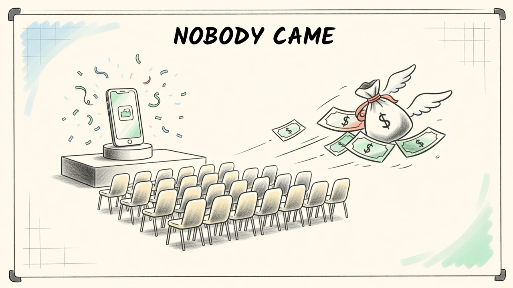
- Built an app, polished it for a year. No one cared.
- Tens of thousands of dollars spent: hired people, outsourced leads to "marketers". It did not work.
Full story
- Struggled with this for years, believing: if I build it, they will come.
- A couple of years ago: one app, a year of polish, zero interest.
- Frustration led to spending tens of thousands trying to buy a fix: hires, outsourced "marketers".
- The lesson that came out of it: start with the audience, before any service or product.
A year of polish. Tens of thousands spent. Zero audience.
2.4
The hidden second cost of no leads: your price
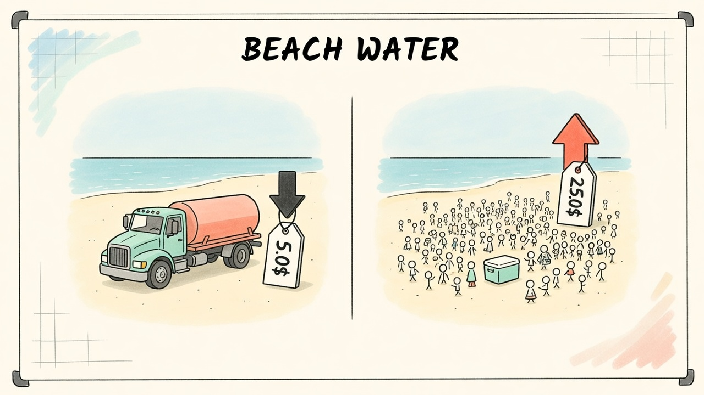
What the crowd says
- Price is set by the market. Compete on price.
What I say
- Supply and demand is micro economics, and you control it.
- More demand than supply, the price goes up.
- Beach one: truck full of water, other sellers, ten people on the sand. Charge little.
- Beach two: packed beach, one cooler of ice cold bottles, only seller. Charge more.
Answer: Generate more demand than supply and the price goes up.
3 · Value
Audience first, then a premium offer, then short form leads every day
3.1 · The shift
Start with the audience, before any product or service
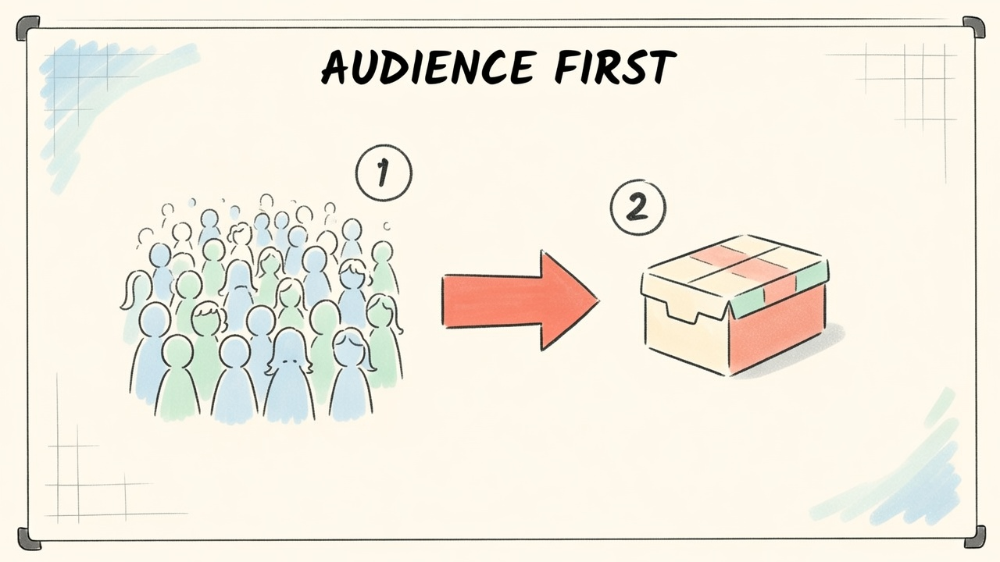
- What are you selling, what problem are you solving, if you do not start with the audience?
- The audience tells you what to build and who pays for it.
Audience first. Always.
3.2 · Who to attract
Four types of audience, one premium offer
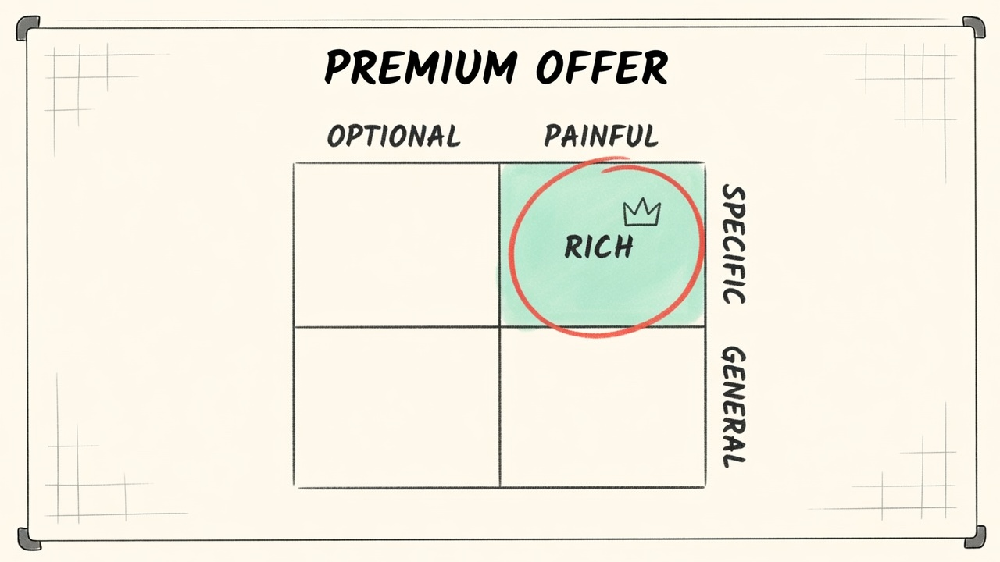
- Two axes: optional vs painful. General vs specific.
- Target the corner: the most painful, most specific problem you can solve.
- For the richest people you can solve it for.
- That is a premium offer. It is the key to success. Works in any niche.
Painful + specific + rich = premium offer.
3.3 · Example
A mentee in the health niche
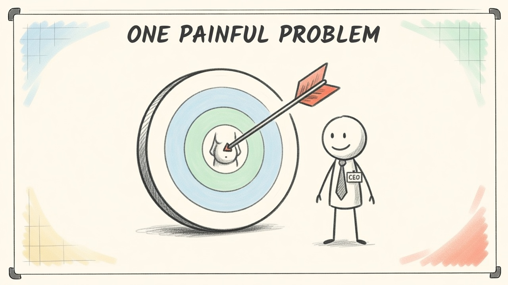
- Health, to weight loss, to loss of visceral fat. That specific.
- CEOs and wealthy individuals first. He is doing it and starting to see success.
3.4 · The map
Three sources of daily leads
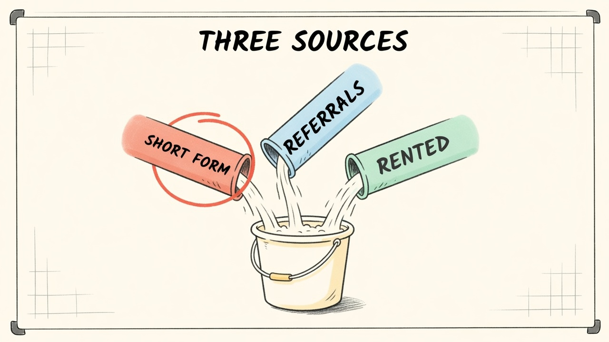
- 1. Short form content.
- 2. High trust referral leads.
- 3. Rented leads: affiliates, partnerships, paid ads.
- Today: short form. The other two another day.
?
Why should your short form post never sell anything?
3.5 · Step one
Pick one platform. Just one.
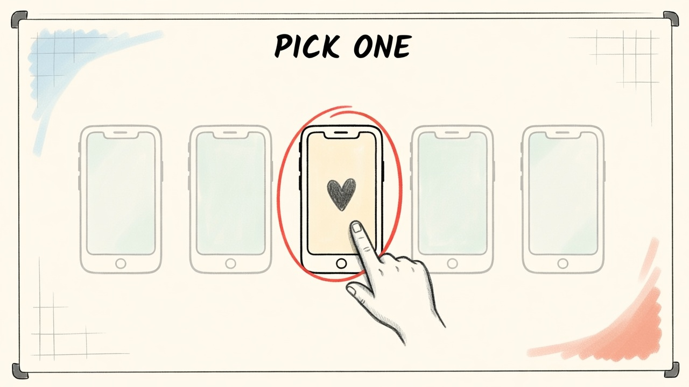
- TikTok, Instagram, X, Facebook, Threads, YouTube Shorts.
- The one you are most comfortable on, ideally one you already use daily.
- Every platform has a culture. Go against the flow and you read as the used car salesman.
- Weigh where your ideal clients hang out, including age demographics.
- Not on social yet? Start now. Follow, comment, support others before posting.
One platform, the one you already live on.
?
What is the fastest way to get noticed on a small channel?
3.6 · Step two
Set up a professional profile
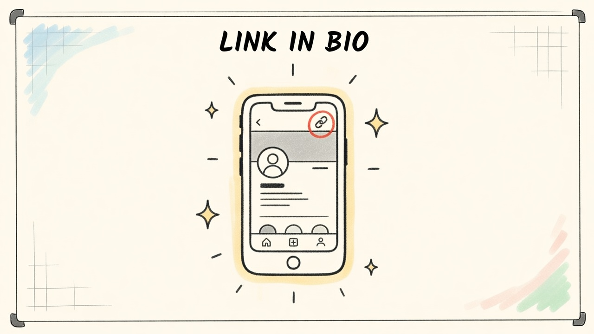
- Community-professional bio, banner and photo where supported.
- Main link at the top of the bio or profile.
- Now "see the link in my bio" works, every time.
3.7 · Step three
Research outliers: the magic quadrant
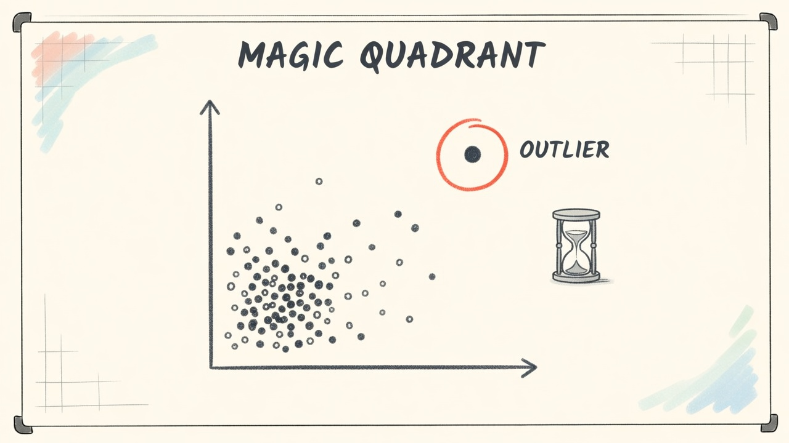
- Tool: Eden, link in the description. Finds trending topics that are outliers on any platform.
- An outlier is the algorithm's signal: this creator uniquely met demand in that moment.
- Perishable. Supply catches up and the algorithm moves on.
- Rule: 3x or more outliers, within a week of posting. The magic quadrant, video linked above.
3x outlier, under a week old. Fresh signal only.
3.8 · Step four
Tear the winners down
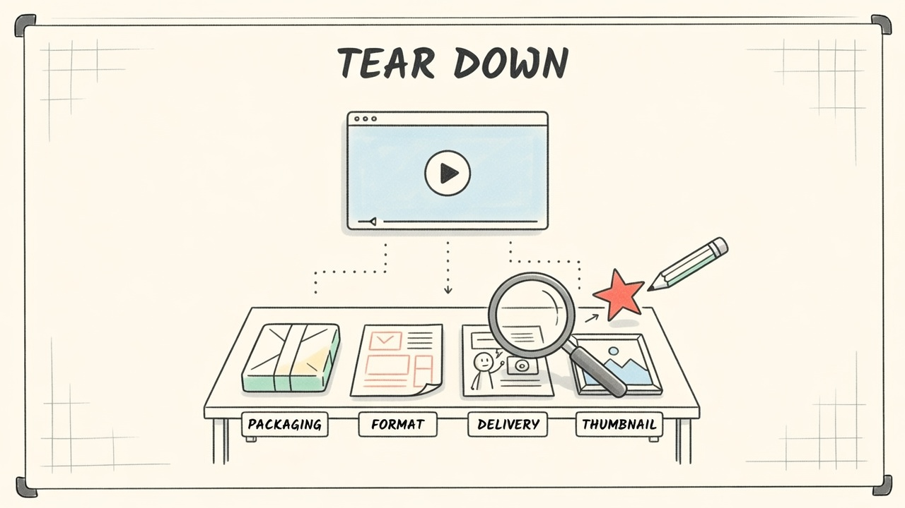
- Study packaging, format, method of delivery, images and thumbnails.
- Do not copy. Do not reinvent the wheel either.
- Use them as a guide. Add your taste and point of view.
- To break through: say something new, and above all, useful.
3.9 · Step five
Four parts of content that works
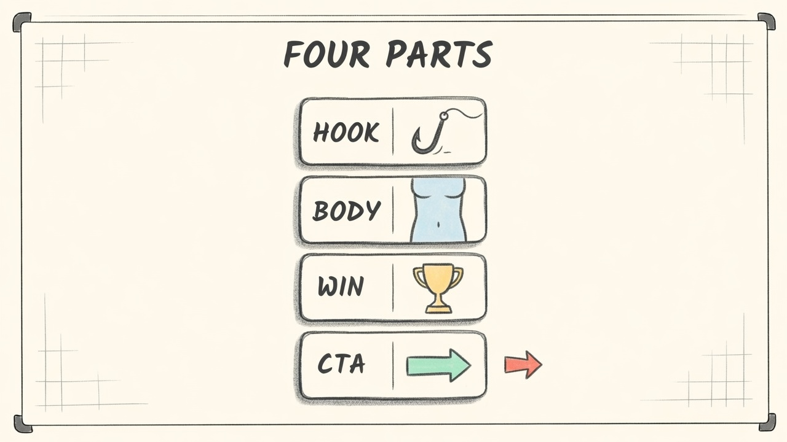
- Hook: the promise. Body: the value. Win: a small insight or tool. CTA.
- Short form is no different, just tighter. Tear down any winner and the four are there.
Hook, body, win, CTA. Even in 30 seconds.
3.10 · The rule
The CTA is never "buy my thing"
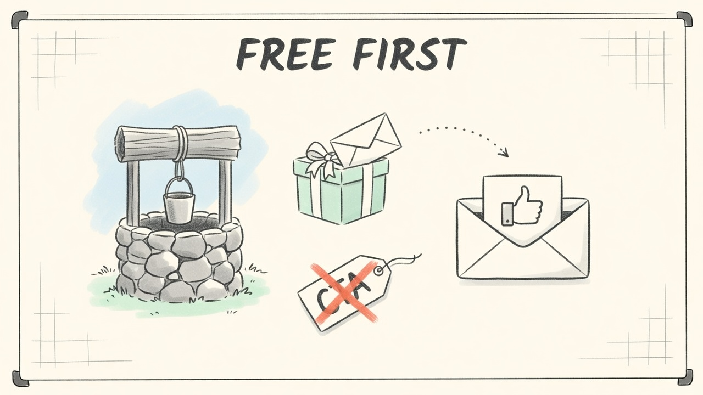
What the crowd says
- Every post should sell. Always pitch the offer.
What I say
- People do not like being sold on short form. Sell there and you poison your well.
- Point to something free to capture the email, or to a long form piece.
Answer: Sell on short form and you poison the well.
3.11 · Hack
Comment early, add value
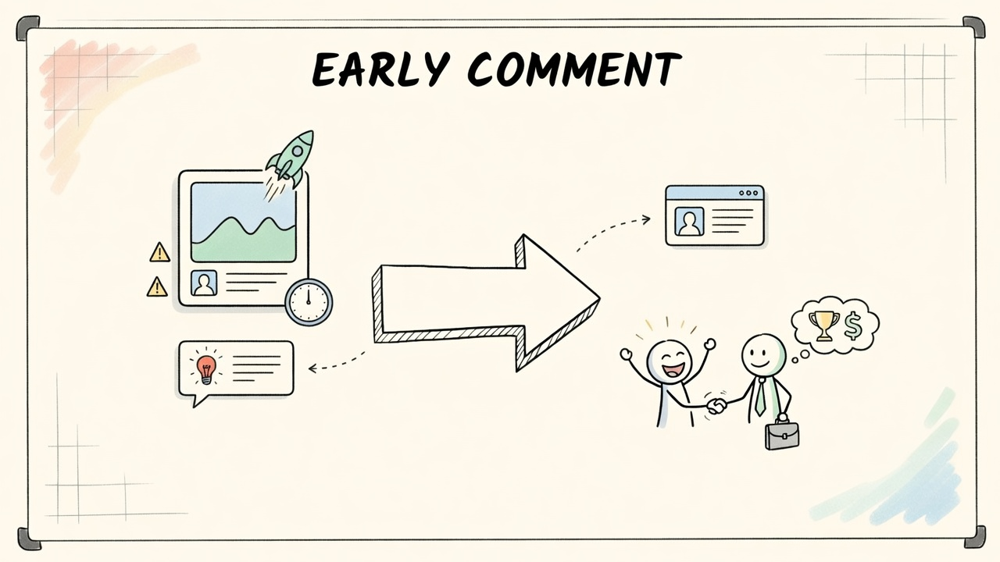
- Be early on others' posts that go viral.
- Add real value. Not "I agree", not "good post".
- People notice, check the bio, click the link.
Answer: Comment early, with real value, on posts that are taking off.
3.12 · Proof
8k followers in 8 months, leads every day
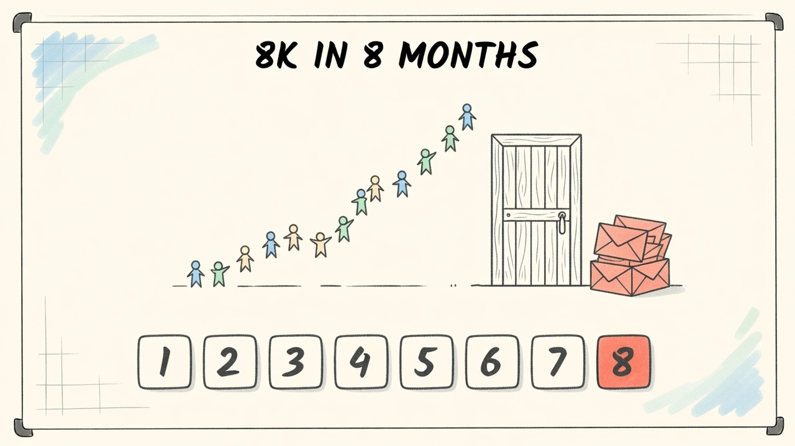
- Adding value and supporting others: 8k followers on X in 8 months.
- Pointed them to a free Skool community, later paid for new members. Every email captured.
- From that audience: leads every day, now.
Free community, emails captured, then paid. Leads daily.
3.13 · Proof
The 300k sale: audience first, again
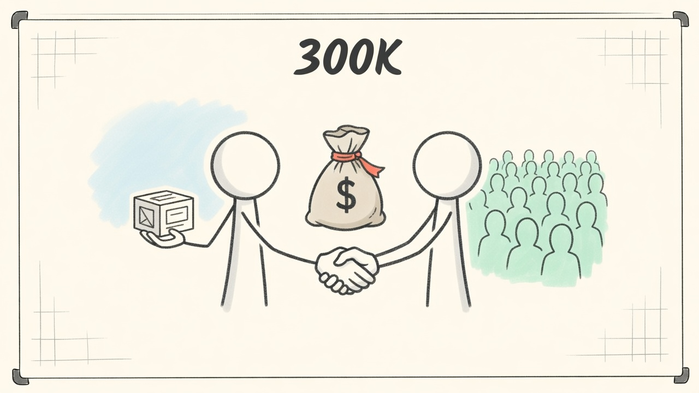
- Product idea, no audience. Built a prototype only.
- Asked a creator with the audience to be an affiliate. They bought the site instead: 200k, then 100k more, still going.
Full story
- Had an idea for a product and realized there was no audience for it. Refused to repeat the old mistake.
- Built a prototype, nothing more. Reached out to someone with a large audience in that niche.
- Offer: be an affiliate, earn commissions for sending leads. Their answer: no, they wanted to buy the site.
- 200k for the site, then another 100k of improvements and maintenance, and still going.
- Feedback from that audience came fast. Functionality and value were added quickly.
- You can leverage someone else's audience to establish value and win. One way or another, the audience comes first.
Answer: Prototype only. Borrowed audience. 300k and counting.
4 · Apply today
A first win in under an hour
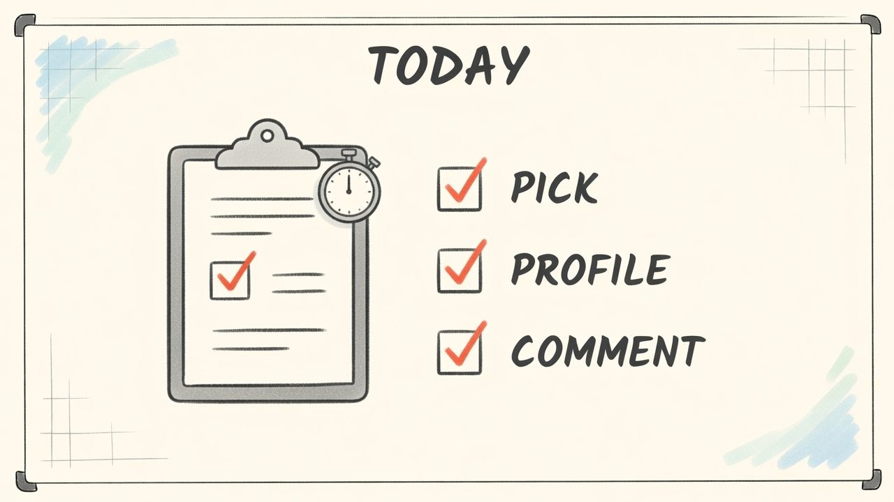
- Pick your one platformThe one already on your phone that you open daily. Decide now, not after research.
- Fix the profile in ten minutesPhoto, banner, one clear bio line, and your main link at the top.
- Leave three valuable commentsFind three posts in your niche taking off today. Add a real insight to each. No "great post".
- Write one short post in four partsHook, body, one small win, and a CTA that points to something free.
Profile clicks start the same day you add value early.
5 · Summary
What we covered
- No leads is the number one problem. Build first is a trap.
- Audience first, then a premium offer: painful, specific, rich.
- More demand than supply and your price goes up.
- Three lead sources. Short form first: one platform, profile, outliers, teardown, four parts, free CTA, early comments.
- Proof: 8k in 8 months, and a 300k sale with a borrowed audience.
6 · Call to action
Short form attracts leads. It rarely converts them.
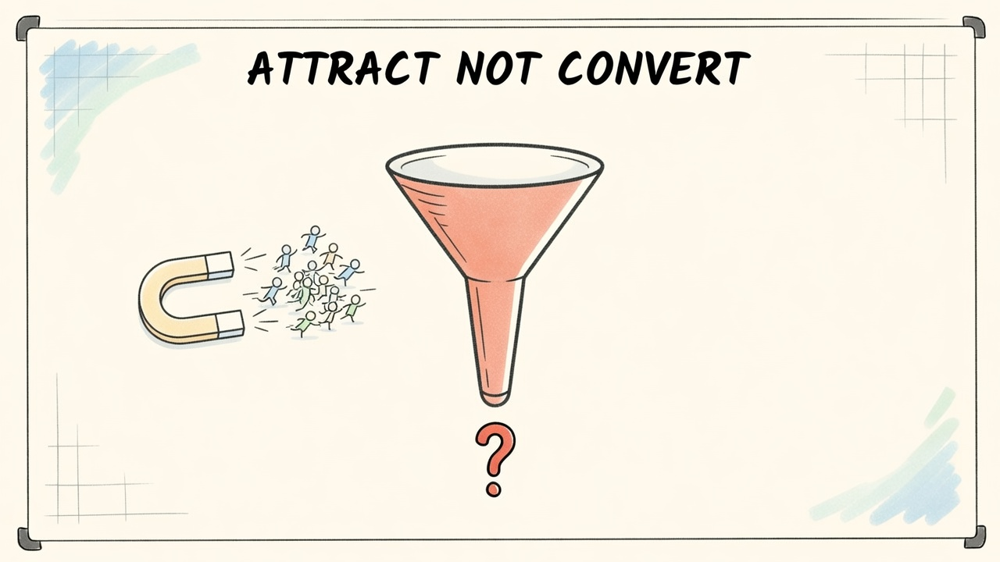
Keep going
- How to convert leads into customers: the video below.
- How to skip the job line and start an AI business, securely: the video at the top.
- More content like this every week: like and subscribe.
Packaging
The promise every piece makes
If you are not getting leads every day, this is for you.
Thumbnails
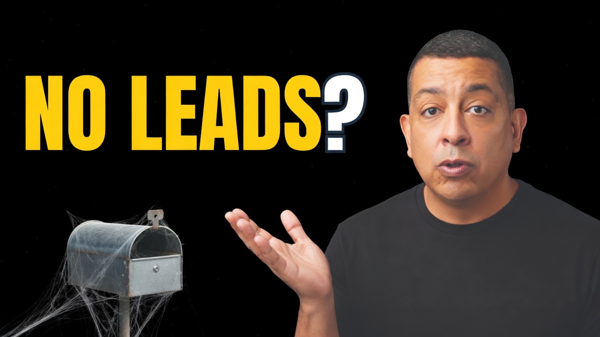
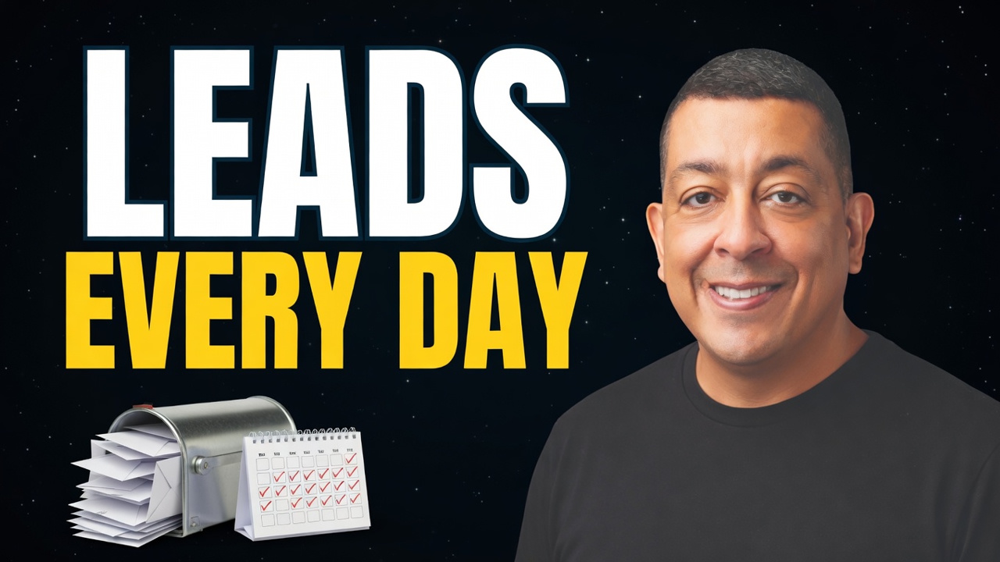
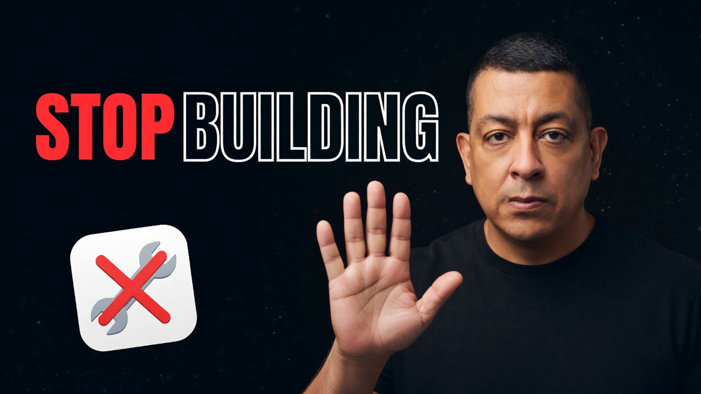
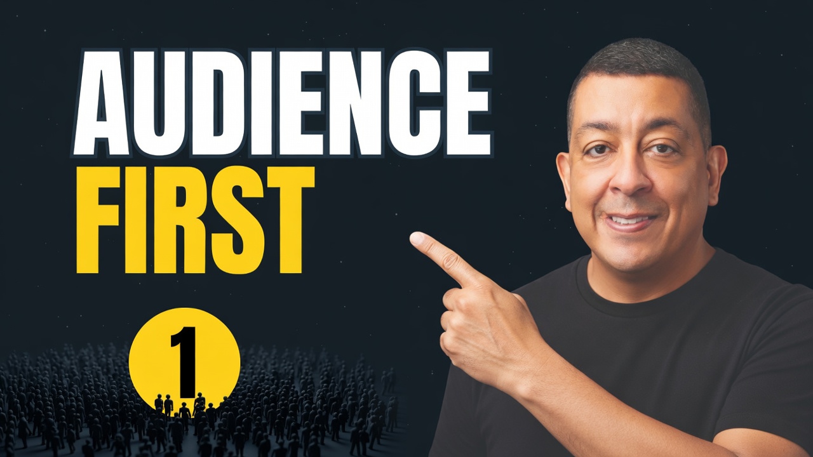
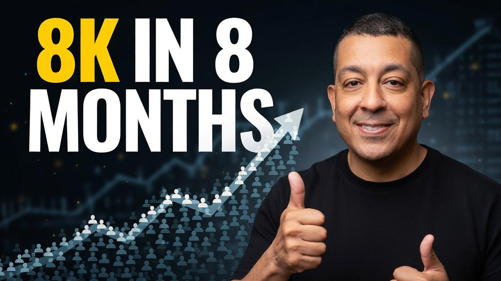
Titles (20, each in a winning frame)
- Leads Every Day Explained in 12 Minutes… explained in # minutes …
- Master Daily Leads in 10 Minutes (No Product Required)… in # minutes …
- How to Build a Lead System That Fills Your Inbox Every Day… how to build …
- How to Build an Audience Before You Build Anything… how to build …
- I Made $300K From a Prototype With Zero Audience (Step by Step)… i made $# … + … step by step …
- How I Made 8K Followers in 8 Months Without Selling Once… how i made …
- The Lead Mistake You Need to Stop Making Today… you need to …
- I Built an App for a Year and Nobody Came. Here Is What Works.… i built a …
- How to Create Leads Every Day From One Platform… how to create …
- The Short Form System That Brings Leads Every Day (Step by Step)… step by step …
- How to Get Leads So Fast It Feels Like Cheatinghow to {outcome} so fast it feels like cheating
- The New Rules of Getting Leadsthe new rules of {subject}
- Brutally Honest Advice About Leads in 10 Minutesbrutally honest advice about {subject} in {n} minutes
- I Spent Tens of Thousands on Leads and Learned ThisI {did} {N} {things} and learned this
- If You Don't Understand Demand, You Don't Understand Your Priceif you don't understand {mechanism}, you don't understand {outcome}
- Lead Generation Is About to Change Forever (Audience First){subject} is about to change forever and nobody even realises
- $0 vs $40,000 Ways to Get Leads${low} vs ${high} {subject}
- No Leads? You Built the Wrong Thing Firstreference set: question + contrarian
- Stop Building. Start With the Audience.reference set: contrarian (Stop)
- Which Lead Source Pays Fastest? 3 Rankedreference set: question + number (7 Ranked)
Hooks
- If you are not getting leads every day, this video is for you. Most businesses' number one problem is not the product. It is leads.
- I polished an app for a year and nobody came. Then one shift brought leads every day and a 300k sale. Here is the shift.
- Everyone tells you to build first. Dead wrong. Build first is a trap, and I paid tens of thousands of dollars to learn why.
- There is a second cost to having no leads, and it is bigger than the sales you are missing. It is your price.
- Pick one platform, fix one profile, leave three comments. That is how 8k followers in 8 months started.
Patterns followed
- Two to four bold words, one of them in a single accent color (yellow or red), the rest white.
- The creator's face on one side, reacting: puzzled, pointing, hand up, proud.
- One prop that carries the promise: money bags, a chart, a clock, a crossed-out thing.
- Contrarian frames win: Stop, Jobless, Hated, Wrong.
- Titles: the strongest mined frames are time-boxed ('in # minutes', 'explained in # minutes'), 'how to build', 'I made $#' and 'step by step'; the seeded templates add the contrarian and loss frames.
Winning title frames (D3 format library)
- … in # minutes … 26 of 69 hit · e.g. Master OpenClaw/Clawdbot in 35 minutes
- … build an ai … 9 of 22 hit · e.g. 🔴 Let's build an AI Agent that can use Tools in NEXT.JS 15! (LangChain, Clerk, Convex, TS, IBM)
- … to build an … 5 of 11 hit · e.g. How to Build an LLM from Scratch | An Overview
- … gpt # astra … 10 of 31 hit · e.g. ChatGPT Released GPT-6 Astra and It’s INSANE! (ChatGPT Astra Use Cases)
- … gpt # sol … 6 of 16 hit · e.g. How To Use Codex To Build Insanely Beautiful Websites Using GPT 5.6 Sol
- … with next js … 6 of 16 hit · e.g. 🔴 Let's build a Receipt Tracker SaaS with NEXT.JS 15 (AI Agents, Inngest, Schematic, Stripe, Clerk)
- … explained in # minutes … 5 of 13 hit · e.g. Model Context Protocol (MCP) Explained in 20 Minutes
- … how to create … 5 of 14 hit · e.g. How to Create a Custom Email Signature in Gmail (2025)
- … i made $# … 5 of 17 hit · e.g. I Made $27 Million Selling Simple Digital Products (Step by Step)
- … how to use … 7 of 28 hit · e.g. How To Use Codex To Build Insanely Beautiful Websites Using GPT 5.6 Sol
- … step by step … 6 of 23 hit · e.g. I Made $27 Million Selling Simple Digital Products (Step by Step)
- … in # mins … 5 of 18 hit · e.g. Master Hermes Agent in 41 mins
- … how to build … 16 of 82 hit · e.g. How to Build an LLM from Scratch | An Overview
- … claude code just … 4 of 14 hit · e.g. Claude Code Just Got Way Better | Auto Claude Kanban Boards
- … saas in # … 3 of 10 hit · e.g. This AI Built My SAAS In 14 MINS???
- … how i made $# … 3 of 10 hit · e.g. How I Made $30 Million With Simple Digital Products (Full Breakdown)
- … you need to … 6 of 29 hit · e.g. ZSvirt: The Best VMware Alternative You Need to Try
- … how i made … 4 of 18 hit · e.g. How I made $11k a day with 1 Digital Product (Full Breakdown)
- … # claude code … 3 of 13 hit · e.g. Don't Miss These 7 Claude Code Updates
- … i built a … 4 of 22 hit · e.g. I Built a Self-Improving Software Factory
- Seeded templates
- if you don't understand {mechanism}, you don't understand {outcome} pattern interrupt + curiosity + loss framing; bridges an unvalued mechanism to a wanted outcome
- I {did} {N} {things} and learned this earned authority through volume
- how to {outcome} so fast it feels like cheating a wanted outcome, faster than plausible; reads as unfair advantage
- the new era of {subject} has just begun shift/urgency frame
- the new rules of {subject} shift frame; implies the viewer's model is stale
- brutally honest advice about {subject} in {n} minutes compression promise + candour signal
- {subject} is about to change forever and nobody even realises shift frame + insider framing
- speedrunning {outcome} [show everything] validated in gaming, transfers to any 'prove it end to end' audience
- ${low} vs ${high} {subject} price-anchored comparison; curiosity about what money buys
Reference set: 20 winning videos (Supply / Demand, top by time-adjusted demand)
 Oktane Keynote Recap: Okta CEO Todd McKinnon on Agent SSO, Cross App Access, and AI Agent Security@OktaInc · 17237.31 x normal, time-adjusted
Oktane Keynote Recap: Okta CEO Todd McKinnon on Agent SSO, Cross App Access, and AI Agent Security@OktaInc · 17237.31 x normal, time-adjusted The 4 Questions Every CISO Must Answer About AI Agents | Blueprint Alliance@OktaInc · 1520.69 x normal, time-adjusted
The 4 Questions Every CISO Must Answer About AI Agents | Blueprint Alliance@OktaInc · 1520.69 x normal, time-adjusted Which AI Side Hustle Pays Fastest? 7 Ranked@DarkHorseEntrepreneur · 983.78 x normal, time-adjusted
Which AI Side Hustle Pays Fastest? 7 Ranked@DarkHorseEntrepreneur · 983.78 x normal, time-adjusted Explore TechFix Apps Lab | Preview 5 New App Concepts@techfix-guides · 503.03 x normal, time-adjusted
Explore TechFix Apps Lab | Preview 5 New App Concepts@techfix-guides · 503.03 x normal, time-adjusted I Made $27 Million Selling Simple Digital Products (Step by Step)@RichardYuBusiness · 218.54 x normal, time-adjusted
I Made $27 Million Selling Simple Digital Products (Step by Step)@RichardYuBusiness · 218.54 x normal, time-adjusted AI MUSIC Creators Are Getting Demonetized for This One Mistake!@itsnataliefong · 130.71 x normal, time-adjusted
AI MUSIC Creators Are Getting Demonetized for This One Mistake!@itsnataliefong · 130.71 x normal, time-adjusted L8 Principal's Agentic Engineering Workflow@kunchenguid · 129.91 x normal, time-adjusted
L8 Principal's Agentic Engineering Workflow@kunchenguid · 129.91 x normal, time-adjusted From Social Media To Scalable Success: GBG Hoops Journey With GetResponse@getresponse · 123.22 x normal, time-adjusted
From Social Media To Scalable Success: GBG Hoops Journey With GetResponse@getresponse · 123.22 x normal, time-adjusted Why AI STORY Channels Keep Getting Demonetized@itsnataliefong · 106.91 x normal, time-adjusted
Why AI STORY Channels Keep Getting Demonetized@itsnataliefong · 106.91 x normal, time-adjusted Anatomy of an AI Agent & Fireside Chat with Matt Wood@be-SA · 90.82 x normal, time-adjusted
Anatomy of an AI Agent & Fireside Chat with Matt Wood@be-SA · 90.82 x normal, time-adjusted Stop Building Websites — Build REAL Web Apps with Google AI + Firebase@Profit-Studio-official · 87.67 x normal, time-adjusted
Stop Building Websites — Build REAL Web Apps with Google AI + Firebase@Profit-Studio-official · 87.67 x normal, time-adjusted What Would It Cost to Run Claude Fable 5 Locally?@kaiexplainsYT · 87.57 x normal, time-adjusted
What Would It Cost to Run Claude Fable 5 Locally?@kaiexplainsYT · 87.57 x normal, time-adjusted I Hated Every Coding Agent, So I Built My Own — Mario Zechner (Pi)@mastra-ai · 83.49 x normal, time-adjusted
I Hated Every Coding Agent, So I Built My Own — Mario Zechner (Pi)@mastra-ai · 83.49 x normal, time-adjusted Inside one of the world’s most efficient Data Centers@tom.developer · 80.46 x normal, time-adjusted
Inside one of the world’s most efficient Data Centers@tom.developer · 80.46 x normal, time-adjusted Exposing why every AI launch goes viral on X@sciencebasedai · 65.44 x normal, time-adjusted
Exposing why every AI launch goes viral on X@sciencebasedai · 65.44 x normal, time-adjusted The First Brain Was Just Uploaded To A Computer@theresanaiforit · 60.42 x normal, time-adjusted
The First Brain Was Just Uploaded To A Computer@theresanaiforit · 60.42 x normal, time-adjusted OpenCode Full Tutorial: Free Models, Skills & MCPs@ericwtech · 59.16 x normal, time-adjusted
OpenCode Full Tutorial: Free Models, Skills & MCPs@ericwtech · 59.16 x normal, time-adjusted 0 Jobs to ₹4L/Month: The AI Business That Changed My Life@CompileFuture · 56.09 x normal, time-adjusted
0 Jobs to ₹4L/Month: The AI Business That Changed My Life@CompileFuture · 56.09 x normal, time-adjusted AI Was Supposed to Replace Developers... Until It Couldn't@devforgehq · 55.7 x normal, time-adjusted
AI Was Supposed to Replace Developers... Until It Couldn't@devforgehq · 55.7 x normal, time-adjusted Define the Right Problem with Mark Richman, Skeleton Key@startupsuccesslaunch · 55.54 x normal, time-adjusted
Define the Right Problem with Mark Richman, Skeleton Key@startupsuccesslaunch · 55.54 x normal, time-adjusted